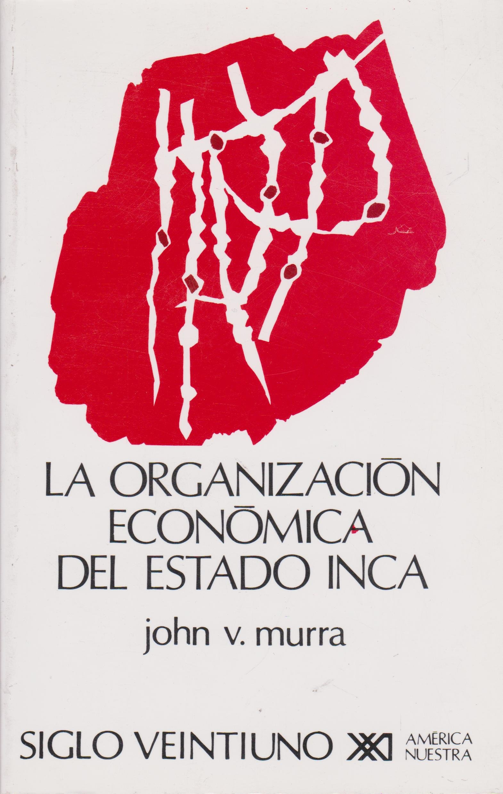

História da América:
Colonização e Resitência - 2020.1
Prof. Eric BrasilAMÉRICA, AMÉRICAS
Apresentação e reflexões sobre a disciplina
12/03/2020
Geografia do Continente
- América do Norte
- América Central e Caribe
- América do Sul
Tamanho real:
A representação dos países e contientes no mapa mundi tradicional apresenta discrepâncias com a realidade. O site The True Size nos ajuda a visualizá-las.
Cronologia Clássica
- Período "Pré-Colombiano" (até o séc. XV)
- Período Colonial (XVI-XIX)
- Período das Américas Independentes (XIX-XXI)
"Descobrimento da América"?
Planisfério de Waldseemüller de 1507

A Invenção da América
O'GORMAN, Edmundo. São Paulo: Unifesp, 1992.
- O que Colombo pensava?
- Quais os sentidos políticos da construção da ideia de América?
- Espelho das projeções europeias
Representações Iconográficas
Que humanos ocupam esse novo mundo? Que natureza é essa?
Brasil e Américas
Integração latino-americana? Mercosul?
Índio? Indígena? Nativos?
- Origem do termo
- Quem é o índio no séc. XIX?
- Identidade étnica e luta por direitos
Índio é um conceito étnico construído ao longo do séc. XX e atualmente é utilizado pelas próprias comunidades como estratégia de manter identidades e lutar por direitos e se aliar a outras comunidades etnicamente distintas para mobilizar reivindicações aos Estados Nacionais
Índio é todo descendente dos povos autóctones das Américas, conscientes de seus costumes, língua e tradições, mesmo que modificados ao longo do tempo, que seja considerado a partir dessa condição por si próprio e por pares.
SILVA, Kalina Vanderlei; SILVA, Maciel Henrique. “Índio”. In: Dicionário de conceitos históricos. São Paulo: Contexto, 2009Uma fotografia compartilhada pelo pastor evangélico Isac Santos no Facebook reacendeu uma discussão que perdura por séculos. Na publicação, feita em 22 de agosto, o religioso aparece acompanhado de diversos xavantes no município de Água Boa, em Mato Grosso, e comemora o fato de ter batizado 38 integrantes da aldeia, entre eles o cacique do grupo. [Como uma imagem reacendeu um debate histórico sobre índios e religião. Vinicius Lemos, BBC Brasil 04/09/2017]
Um problema atual:
Como enfrentar essas questões em sala de aula?
O que vcs estudaram sobre as Américas no ensino básico?
Colônia de Povoamento X Colônia de Exploração
um mito persistente.
- Ibéricos X Britânicos
- Clima e Geografia
- Origens do "atraso" ou "sucesso" das colônias
Afinal, o que é colonizar?
Sociedades Autóctones das Américas
(Antes do séc. XV)
Aula Síncrona 2 - 21/01/2021Regiões densamente habitadas
- Caribe
- Mesoamérica
- Região Andina
Caribe
Populações das ilhas do Caribe
Grande dificuldade para estudo histórico: extermínio, destruição de fontes primárias, séculos de colonização com migrações frequentes;
Caminho de estudo principal: arqueologia
Explore o site do Museu Taíno
Etnia arawak que ocupava muitas ilhas caribenhas. Sua cultura ainda é uma marca importante em países como a República Dominicana.
Arawaks
- Ocupação das ilhas mais ao norte;
- Povos sedentários, população densa em algumas ilhas (como Hispañola);
- Agricultra (mandioca, milho e outros grãos);
- Organização política em unidades entre mil e dois mil habitantes;
- Organização social em 'caciques', mitaios (nobres), trabalhdores comuns e naborias (dependentes)
Caraíbas
- Ocupavam as pequenas ilhas do sul;
- Semi-sedentários, oriundos da América do sul;
- Haviam conquistado as ilhas menores do sul dos Arawaks e estavam em expansão no momento da chegada dos europeus;
- Desenvolveram grandes canoas oceânicas que permitiam longas viagens, enfrentar batalhas e realizar pesca extensiva.
Sociedades da Mesoamérica
(séc. V-XVI)
A partir do texto de León-Portilla. "A Mesoamérica antes de 1519".
Miguel León-Portilla, (1926-2019)
"La Vision de los vencidos", 1959.

Breve cronologia
- 9000 a.c.: primeiros fóssies humanos;
- 5000 a.c.: agroicultura (abóbora, malagueta, feijão, milho);
- 2300 a.c.: cerâmica;
- 1500 a.c.: Sociedades complexas, com desenvolvimento de urbanismo, comércio, artes, exércitos. Principal exemplo são os Olmecas.
Olmecas (séc. XIII a.c.)

Olmecas (1500 A.C. - 400 A.C)
Se desenvolvem na região sul do atual México e sua cultura complexa, marcada por divisão do trabalho (entre comércio, agricultura, defesa e artes) assim como um urbanismo marcado por grandes praças e templos religiosos, tornou-se uma certa "Alta cultura matriz" para toda região mesoamericana. Essa difusão se fez principalmente pelo comércio e pelo empenho religioso dos Olmecas.
Região Olmeca

Período Clássico (V-X)
Elementos importantes que marcam o desenvolvimento das sociedades mesoamericanas: não conheciam a roda, sem metalurgia até 950 d.c, sem animais domésticos além de perus e cães).
Vejamos duas sociedades do período clássico e suas principais características: Teotihucan e Maias.
Teotihuacán - Pirâmide do Sol

Teotihuacán - Pirâmide da Lua

Maias - Chichen Itza

Maias - Templo de Kukulcán


Leitura guiada e crítica do texto (pp. 30-33):
- Liste as principais características sociais, culturais e políticas dessas sociedades;
- Faça um resumo com as principais explicações para o declínio dessas sociedades;
- Aponte os principais legados desses povos para a região.
Período Pós-Clássico (950-1519)
Formação, consolidação e expansão do Estado Mexica pela Mesoamérica.
Pedra do Sol
Leitura guiada e crítica do texto (pp. 36-40):
- Explique as relações entre narrativa do passado, os mitos fundadores da sociedade mexica, com a consolidação e expansão política e militar do Estado Mexica no início do século XVI.
Códex Mendoza: mito fundador Mexica.

Cronologia:
- 1325-1425: Mexicas subjugados ao domínio Tecpaneca, devendo tributos e serviços;
- 1426-1430: Guerra entre Mexicas e Tecpanecas. Vitória mexica garante independência e consolida o poder dos pipiltin ('nobres'), abre caminho para a expansão militar.
- 1430-1519: Expansão millitar: força militar, confiança em seu 'destino manifesto'. Contínua expansão política e econômica sobre povos de diferentes etnias, sendo subjugados de diferentes formas.
A questão das Fontes Escritas
- Registros dos missionários
- Registros dos funcionários, militares europeus
- Escritos indígenas e de seus descendentes
Historiografia sobre os Mexicas (p. 41)
- Cronistas espanhóis e historiadores do século XIX: interpretação da sociedade mexica através de um olhar eurocêntrico, aproximando das estruturas, termos e práticas da sociedade feudal europeia
- Morgan (1877) e Bandelier(1880): revisionismo que nega o caráter feudal das sociedades do México. Afirma que essas não teriam "classes sociais diferenciadas e não haviam desenvolvido formas de organização política"(41), teriam apenas vínculos de sangue.
Historiografia sobre os Mexicas (p. 41)
- 1930-1940: Moreno,Kirchhoff, Monzón, Katz. Análise das fontes indígenas. Mostram a complexidade da organização social mexica. Classes, possa da terra, formação de Estado.
- 1960-1970: interpretação marxista (Pedro Carrasco). Modo asiático de produção. Aldeias comunais, com uso coletivo da terra. Organização política e a existência de um governo se justificaria pela necessidade de grandes obras públicas (principalmente hidráulicas) e a liderança do povo.
Historiografia sobre os Mexicas (p. 41)
- 1970-1980: Análise sociocultural através das fontes indígenas, inclusive em língua náhitl, para compreender a complelxidade cultural, social e política da sociedade mexica. León-Portilla e Christian Duverger
- 1990: Serge Gruzinski: afirma que o imenso e violento processo de ocidentalização na América criou uma imagem uniforme dos mundos nativos que em nada correspondem à diversidade deste universo.
 Expansão do Estado Mexica em 1519
Expansão do Estado Mexica em 1519
 Códex Mendoza: "Plebeu" ascendendo socialmente através da captura de prisioneiros de guerra.
Códex Mendoza: "Plebeu" ascendendo socialmente através da captura de prisioneiros de guerra.
Leitura guiada e crítica do texto (pp. 43-52):
- Caracterize a estrurua social complexa mexica, levando em consideração as relações de poder entre os grupos dominantes e os trabalhadores, assim como a relação de posse da terra.
 Códex Mendoza: Tributos pagos à capital Tenochtitlán
Códex Mendoza: Tributos pagos à capital Tenochtitlán
Leitura guiada e crítica do texto (pp. 52-55):
- Caracterize a economia mexica, especialmente no que se refere ao comércio.
Sociedades Andinas
antes de 1532
A partir do texto de John Murra. "As sociedades andinas anteriores a 1532".
Jonh Murra (1916-2006)
Antropólogo que estudou a etnologia histórica dos Incas; grande autoridade nos estudos andinos.
"La organizacion economica del estado Inca", primeira edição de 1977 (a partir de tese defendida na Universidade de Chicago em 1955.
Leitura guiada e crítica do texto: A questão das fontes
- Caracterize as fontes utilizadas e analisadas pelo autor: cronistas do século XVI (tanto espanhóis quanto nativos) e documentos coloniais (eclesiásticos, jurídicos e 'visitas');
- Aponte as limitações das fontes e a proposta do autor para superá-las.
Conclusões dos observadores quinhentistas que foram confirmadas pelas pesquisa históricas:
- Paisagem única
- Riqueza material, populacional, tecnológica (irrigação, edificações, metalurgia, estradas, produtos têxteis);
- Domínio político recente dos incas na região (três ou quatro gerações).
A ocupação do território andino antes dos Incas.
- Geografia dos Andes: diversos pisos ecológicos devido a grande variação de altitude em uma extensão reduzida;
- Desenvolvimento da agricultura: tubérculos, folhas de coca, cereais, milho;
- Controle vertical de diferentes pisos ecológicos para garantir o sustento da comunidade: a colonização do território andino era, portanto, como um arquipélago, colonização dispersa em pequenas "ilhas".

Padrões de organização social pré-incaicos: Ayllu
“A população andina vivia em um multiplicidade de pequenas coletividades agropastoris (...) Cada aldeia era habitada por um conjunto de famílias unidas por laços de parentesco ou aliança, que representava um ayllu.“Henri Favre. A civilização Inca. Rio de Janeiro: Jorge Zahar Editor, 2004, p. 29-30.
Padrões de organização social pré-incaicos: Kuraka
“As células domésticas constitutivas do ayllu reconheciam um chefe ou Kuraka que era geralmente o fundador do grupo. O kuraka distribuía as terras, organizava os trabalhos coletivos e regulava os conflitos.“Henri Favre. A civilização Inca. Rio de Janeiro: Jorge Zahar Editor, 2004, p. 30-31.
Padrões de organização social pré-incaicos: Waka
“(...) Divindade tutelar do [ayllu] que era em geral um ancestral do kuraka e na qual este se apoiava para exercer sua autoridade.“Henri Favre. A civilização Inca. Rio de Janeiro: Jorge Zahar Editor, 2004, p. 30-31.
Padrões de organização social pré-incaicos: Terra
Terra era coletiva, com lotes divididos por famílias no interior de cada Ayllu. O kuraka busca garantir que cada família tivesse acesso a todos os pisos ecológicos. Ou seja, o acesso a terra correspondia a uma complementariedade vertical para subsistência.
Padrões de organização social pré-incaicos: Trabalho e tributo
Sistema redistributivo e de reciprocidade: todos os membros do Ayllu deveriam trabalhar para o kuraka e a waka.
O serviço prestado ao kuraka, à waka e à propria coletividade em forma de trabalho era chamado de mita.
Cabia ao Kuraka redistribuir em produtos o trabalho que recebia, o que garantiria a subsistência e reprodução da comunidade em momentos de crise e sua posição de prestígio e poder.
Todos esses padrões (Ayllu, Kuraka, Waka, Ocupação arquipélago, Mita, redistribuição) serã incorporados pelo Império Inca em sua expansão política e militar.
O Império Inca (c.1400-1532)
A expansão inca entre 1438 e 1532.

A formação do Tawantinsuyu
- A cidade de Cusco foi fundada por Manco Capac (c. 1200) após décadas de migrações. No vale de Cusco, a cidade-Estado conquistou vitórias militares importantes e consolidou seu poder na região.
- Viracocha Inca, foi fundado o Tawantinsuyu em 1438, e os Incas iniciaram sua expansão militar, aliada com justificativa cultura imperialista: 'missão civilizadora'.
A expansão Inca
Os sucessos nas guerras que lhes garantiram o controle do vale de Cusco causou desequilíbrio nas forças da região. As reações a essa hegemonia Inca levou a novas guerras e conquistas.
Em menos de 100 anos o império atingiu aproximadamente 950 mil km2.
Quanto maior o império, mais as guerras externas eram necessárias para manutenção das estabilidade e unidade interna.
O papel da guerra de conquista:
“A guerra de conquista constituía um fator essencial de integração e de mobilidade social dentro do Império. Ela representava o projeto coletivo que confederava os povos vencidos e subjugados. A realização de tal projeto era bastante lucrativa para tornar tangível aos olhos destes últimos as vantagens da dependência em que seriam mantidos.“Henri Favre. A civilização Inca. Rio de Janeiro: Jorge Zahar Editor, 2004, p. 26.
O Domínio Inca e os impactos nas sociedades andinas
O império Inca utiliza a mesma estrutura tradicional da região, mas impõe novos sentidosa elas.
O uso da mita é ampliado e extendido enormemente: passa a ser implementada em diversas funções e os trabalhadores são enviados para regiões cada vez mais distantes. Isso enfraquece as chefias locais e o sistema de reciprocidade, e garante a geração de renda e poder diretamente para o Estado Inca.
Leitura guiada e crítica do texto: A burocracia do Império Inca
- Analise a importância da burocracia estatal, do controle da demografia (com o uso dos Kipu) e a criação das estradas e do correio para a manitenção do império Inca.
Mexicas e Incas: Estados em expansão
Ambos buscavam implemantar uma política expansionista, controlando e subjugando comunidades na Mesoamérica e na Região Andina respectivamente. Esse domínio mesclava a diplomacia, a ameaça de invasão militar e as guerras.
Às vésperas na chegada dos espanhóis, mexicas e incas controlavam centenas de comunidades, cobrando tributos, seja em forma de produtos (Mexicas) ou em forma de trabalho (a mita entre os Incas), e mantendo controle político e militar rígidos. O que geraria insatisfação e traria consequências profundas para o futuro desses Estados.